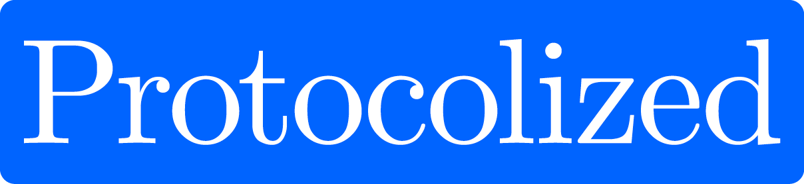

Protocol Institute brand kit.
This kit defines the brand for the Protocol Institute and its magazine, Protocolized. It covers color, type, logo, imagery, voice, and components. It is one token system, used in two veins. Apply it by hand or with an agent.
One token system, two veins.
The Protocol Institute is a research, education, media, and scene-making organization for protocols. Its work appears in two veins. Choose the vein first. The vein sets the color, type, and imagery to use.
Protocol Institute
- Use when
- Working-group outputs, SIG write-ups, research reports, challenges, institutional pages.
- Color
- Cobalt
--pi-action-primary; restrained accent. - Type
- Serif display (Computer Modern → Instrument Serif) + Lora. Precise, structured.
- Imagery
- technical-schematic, abstract-geometric.
Protocolized
- Use when
- Magazine pieces — Non-Fiction (Studies / Obliquities / Science) and Fiction. Cover-art-led.
- Color
- Forest green
--pi-action-secondary(live); rust for “Featured”. - Type
- Instrument Serif 400 + Lora. Literary, exploratory.
- Imagery
- painterly-illustration, retro-vintage, surreal-collage.
Decision tokens.
Each token is named for its purpose, not its value. Pick a token by purpose.
Click a swatch to copy its hex value for use in CSS or design tools, or copy the CSS variable.
The set is closed. If a need is not covered, extend brand.json first.
#0064ff.
The live protocolized.io still uses forest green #0f6e56 as the action
color. Use cobalt for new work. Use green to match the live site. White text on cobalt, green, and
rust passes WCAG AA. Do not put text-secondary on an action fill.Typography.
Display and body text are serif. The brand prefers Computer Modern and falls back to Instrument Serif and Lora. UI text is Outfit. Headlines use weight 400. Do not set display headings bold.
brand.css — it @imports
Instrument Serif, Lora, and Outfit. Declaring the stacks without loading the webfonts gives
system fallbacks. Quick check: a heading must render in Instrument Serif, not a generic serif or sans.| Role | Family | Size / Weight |
|---|---|---|
| Hero display | serif | 72 / 400 |
| Detail display | serif | 48 / 400 |
| Tagline (italic) | serif italic | 30 / 400 |
| Section H2 | serif | 24 / 400 |
| Lead / dek | body | 18 / 400 |
| Body | body | 16 / 400 |
| Button | sans | 16 / 500 |
| Nav / meta | sans | 14 / 400 |
| Caption / badge | sans | 12 / 500 |
Logo and marks.
Use the supplied vector marks. Keep clear-space of at least the height of the “P” on all sides. Use the black mark on light surfaces. Use the white mark on dark surfaces or imagery.


Do not:
- Stretch, squash, or rotate the mark
- Recolor outside the brand palette
- Add shadows, outlines, or gradients
- Place black mark on dark / busy imagery
- Crop or crowd the clear-space
- Rebuild the mark from system type
Imagery.
Brand imagery is the curated artwork of Protocolized:
111 pieces in assets/images/. Each is catalogued in
metadata.json with a
description and a color palette. The artwork falls into seven aesthetic groups. Choose a group by
vein. Use a piece's palette to set layout accents. Do not use real-person photos, headshots,
event photos, screenshots, charts, or data-visualizations.
Loading the library…
Voice and tone.
Match the vein. The Institute writes like a research body. Protocolized Non-Fiction writes like a magazine of ideas. Use simple, direct sentences in both.
Protocol Institute — research
Say
- Name the protocol and the coordination problem it solves.
- Lead with the claim, then the evidence; cite sources.
- Define terms once, plainly; reuse them.
- Frame outputs as working-group findings.
Don’t
- Hype or absolutes (“revolutionary”).
- Undefined jargon or acronym soup.
- Marketing voice — this is a research institute.
Protocolized — Non-Fiction
Say
- Treat protocols as narrative & philosophical instruments.
- Earn the idea: vivid framing carried by real analysis.
- Let a strong title and concept lead — it’s “New Nature”.
- Be oblique where it illuminates, then land the point.
Don’t
- Dry institutional report voice (that’s the other vein).
- Whimsy without substance.
- Break character into press-release tone.
Components.
Buttons, badges, chips, and cards are built from the tokens. The set is closed. To add a component, derive it from the tokens and the radius, hairline, and type roles. The download button below is a secondary button with a glyph.
pill. Cards/buttons → md (8px).--pi-border-hairline; no resting shadow, hover only..pi-topnav, .pi-wordmark.For agents.
The kit is built so an agent can apply it without drifting off-brand. It follows
the "decisions over values" principle from
Polar's Orbit.
Read llms.txt, then load brand.json and brand.css.
--pi-action-primary, never a raw hex.brand.json + brand.css drive everything here.<link rel="stylesheet" href="brand.css"> <!-- then use decision tokens / classes --> <a class="pi-btn pi-btn--primary">Get the kit</a> <span class="pi-badge pi-badge--framework">Framework</span> style="color:var(--pi-text-secondary); background:var(--pi-background-surface)"